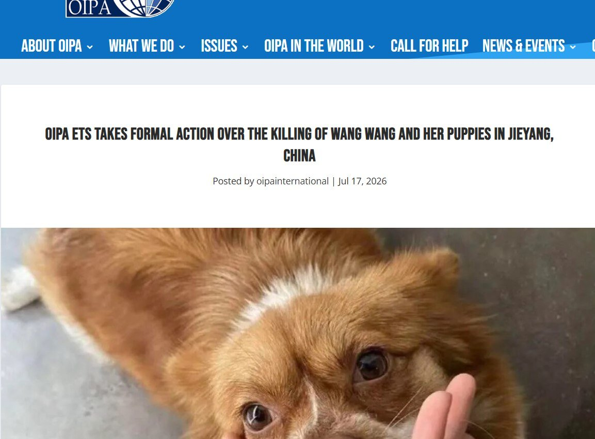
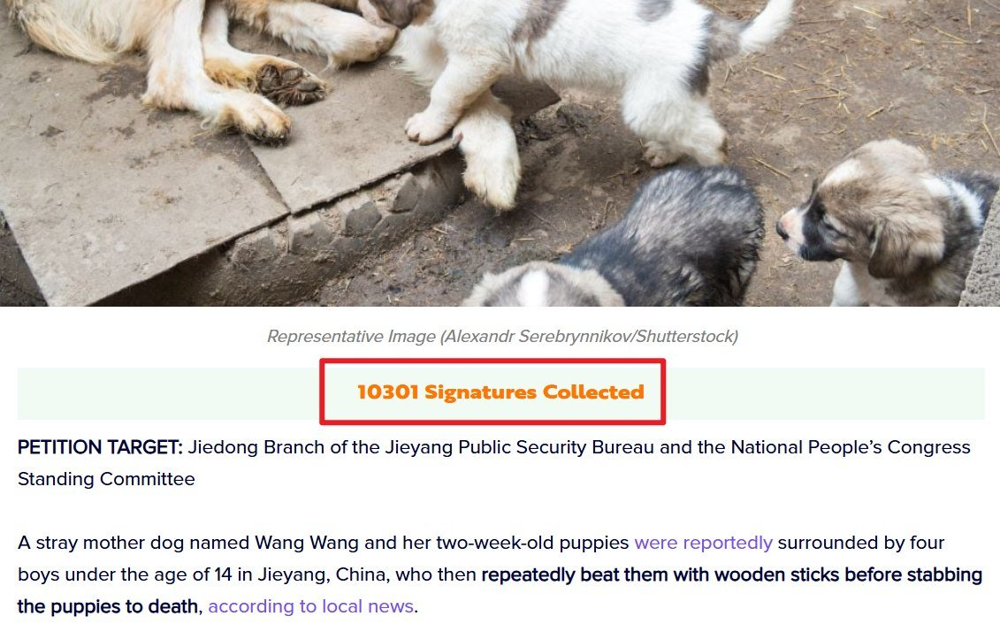

愿晚星照常升起🌈(keep4o)
@tadatsukiei
@whyyoutouzhele 评论区某些人的话术能不能改一改？
我真要把你们视为共匪网军了。


愿晚星照常升起🌈(keep4o)
@tadatsukiei
@whyyoutouzhele 每当看到什么“人权都没有的地方还争取狗权？”的时候，我就很无语。
这两者难道不是同一回事吗？牢中的零和博弈思维又作祟了是吧。争取动物的权益就会导致没人争取人的权益？你把这当成优先级问题，然而实际上是沉默与行动二选一的问题。
“人权都没有的地方还争取狗权？”
反驳：
李老师不是你老师
@whyyoutouzhele
【揭阳虐狗事件】
中国迟迟不立法，中国网友为旺旺向海外组织寻求声援 https://t.co/Qu94vfFGCq